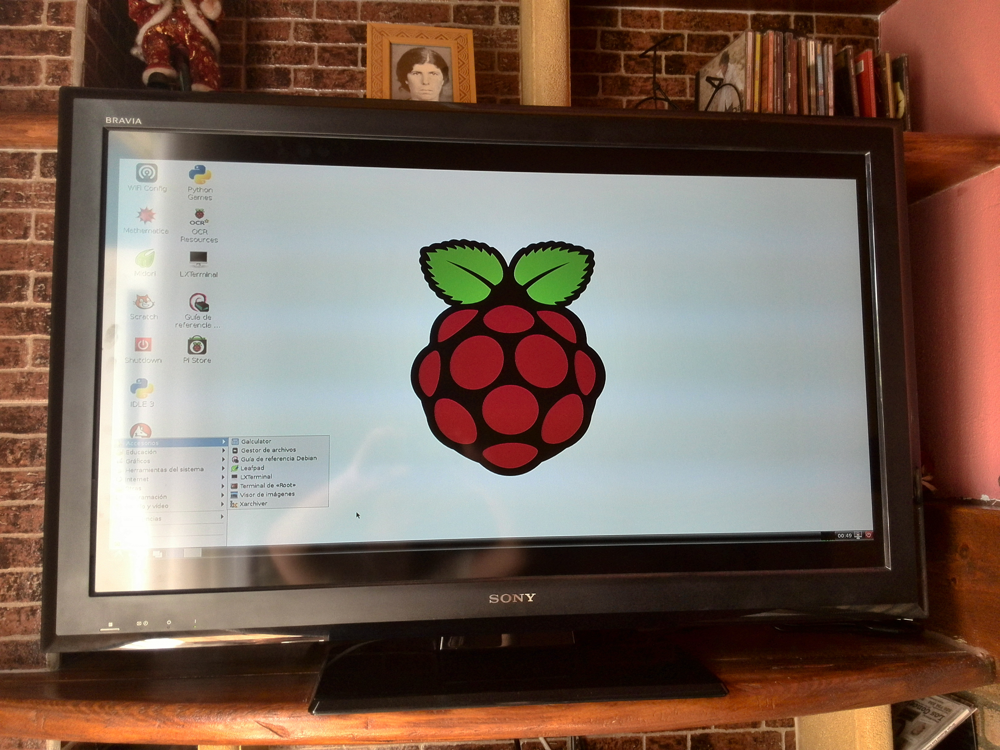

- Módulo: Sistemas Operativos
- Título del trabajo Raspberry PI
- Componentes del grupo: Gregorio Adrián Quintero Álvarez
- Curso Académico: 2013/2014
- Fecha de entrega: 13 de Mayo de 2014
Para realizar esta práctica empezaremos descargamos NOOBS el cual contiene todos los sistemas operativos y así podemos elegir uno cualquiera despues introduciremos el NOOBS en la memoria SD, elegimos Raspbian, lo instalamos y posteriormente activamos el modo gráfico. Ahora crearemos el usuario profesor con clave profesor, además estableceremos como clave de root y de pi profesor.
